Difference in electronegativity between nitrogen and hydrogen atoms and the presence of unshared pair of electrons over the nitrogen atom makes amines reactive. The number of hydrogen atoms attached to nitrogen atom also decides the course of reaction of amines; that is why primary 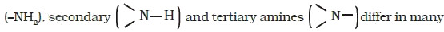reactions. Moreover, amines behave as nucleophiles due to the presence of unshared electron pair. Some of the reactions of amines are described below:
Amines, being basic in nature, react with acids to form salts.
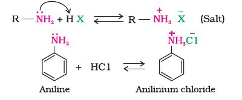
Amine salts on treatment with a base like NaOH, regenerate the parent amine.
Amine salts are soluble in water but insoluble in organic solvents like ether. This reaction is the basis for the separation of amines from the non basic organic compounds insoluble in water.
The reaction of amines with mineral acids to form ammonium salts shows that these are basic in nature. Amines have an unshared pair of electrons on nitrogen atom due to which they behave as Lewis base. Basic character of amines can be better understood in terms of their Kb and pKb values as explained below:
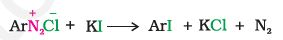
Larger the value of Kb or smaller the value of pKb, stronger is the base. The pKb values of few amines are given in the table below.
pKb value of ammonia is 4.75. Aliphatic amines are stronger bases than ammonia due to +I effect of alkyl groups leading to high electron density on the nitrogen atom. Their pKb values lie in the range of 3 to 4.22. On the other hand, aromatic amines are weaker bases than ammonia due to the electron withdrawing nature of the aryl group.
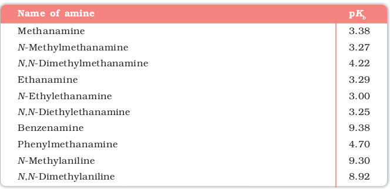
You may find some discrepancies while trying to interpret the Kb values of amines on the basis of +I or –I effect of the substituents present in amines. Besides inductive effect, there are other effects like solvation effect, steric hinderance, etc., which affect the basic strength of amines. Just ponder over. You may get the answer in the following paragraphs.
Basicity of amines is related to their structure. Basic character of an amine depends upon the ease of formation of the cation by accepting a proton from the acid. The more stable the cation is relative to the amine, more basic is the amine.
Let us consider the reaction of an alkanamine and ammonia with a proton to compare their basicity.
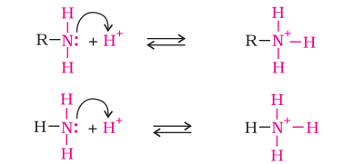
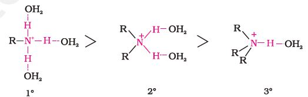
Decreasing order of extent of H-bonding in water and order of stability of ions by solvation.
Greater is the stability of the substituted ammonium cation, stronger should be the corresponding amine as a base. Thus, the order of basicity of aliphatic amines should be: primary > secondary > tertiary, which is opposite to the inductive effect based order. Secondly, when the alkyl group is small, like –CH3 group, there is no steric hindrance to H-bonding. In case the alkyl group is bigger than CH3 group, there will be steric hinderance to H-bonding. Therefore, the change of nature of the alkyl group, e.g., from –CH3 to –C2H5 results in change of the order of basic strength. Thus, there is a subtle interplay of the inductive effect, solvation effect and steric hinderance of the alkyl group which decides the basic strength of alkyl amines in the aqueous state. The order of basic strength in case of methyl substituted amines and ethyl substituted amines in aqueous solution is as follows:
(C2H5 )2NH > (C2H5 )3N > C2H5 NH2 > NH3 (CH3)2NH > CH3NH > (CH3)3N > NH3pKb value of aniline is quite high. Why is it so? It is because in aniline or other arylamines, the -NH2 group is attached directly to the benzene ring. It results in the unshared electron pair on nitrogen atom to be in conjugation with the benzene ring and thus making it less available for protonation. If you write different resonating structures of aniline, you will find that aniline is a resonance hybrid of the following five structures.
On the other hand, anilinium ion obtained by accepting a proton can have only two resonating structures (kekule).
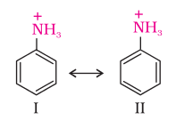
We know that greater the number of resonating structures, greater is the stability. Thus you can infer that aniline (five resonating structures) is more stable than anilinium ion. Hence, the proton acceptability or the basic nature of aniline or other aromatic amines would be less than that of ammonia. In case of substituted aniline, it is observed that electron releasing groups like –OCH3, –CH3 increase basic strength whereas electron withdrawing groups like –NO2, –SO3H, –COOH, –X decrease it.
Amines undergo alkylation on reaction with alkyl halides (refer to "Haloalkanes and Haloarenes").
Aliphatic and aromatic primary and secondary amines react with acid chlorides, anhydrides and esters by nucleophilic substitution reaction. This reaction is known as acylation. You can consider this reaction as the replacement of hydrogen atom of –NH2 or >N–H group by the acyl group. The products obtained by acylation reaction are known as amides. The reaction is carried out in the presence of a base stronger than the amine, like pyridine, which removes HCl so formed and shifts the equilibrium to the right hand side.
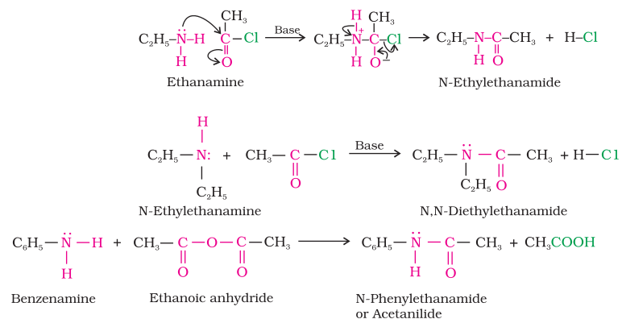
Amines also react with benzoyl chloride (C6H5COCl). This reaction is known as benzoylation.
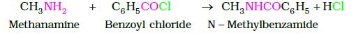
They form salts with amines at room temperature.
Aliphatic and aromatic primary amines on heating with chloroform and ethanolic potassium hydroxide form isocyanides or carbylamines which are foul smelling substances. Secondary and tertiary amines do not show this reaction. This reaction is known as carbylamine reaction or isocyanide test and is used as a test for primary amines.
Three classes of amines react differently with nitrous acid which is prepared in situ from a mineral acid and sodium nitrite.
(a) Primary aliphatic amines react with nitrous acid to form aliphatic diazonium salts which being unstable, liberate nitrogen gas quantitatively and alcohols. Quantitative evolution of nitrogen is used in estimation of amino acids and proteins.
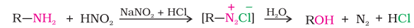
(b) Aromatic amines react with nitrous acid at low temperatures (273-278 K) to form diazonium salts, a very important class of compounds used for synthesis of a variety of aromatic compounds discussed.
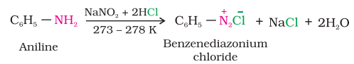
Secondary and tertiary amines react with nitrous acid in a different manner.
Benzenesulphonyl chloride (C6H5SO2Cl), which is also known as Hinsberg's reagent, reacts with primary and secondary amines to form sulphonamides.
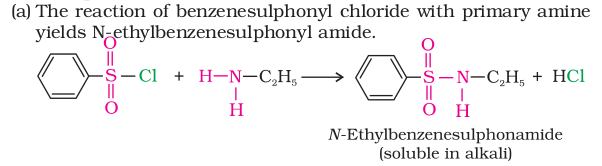
The hydrogen attached to nitrogen in sulphonamide is strongly acidic due to the presence of strong electron withdrawing sulphonyl group. Hence, it is soluble in alkali.
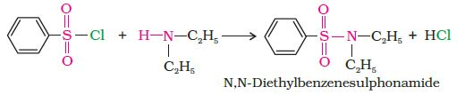
Since N, N-diethylbenzene sulphonamide does not contain any hydrogen atom attached to nitrogen atom, it is not acidic and hence insoluble in alkali.
(c) Tertiary amines do not react with benzenesulphonyl chloride. This property of amines reacting with benzenesulphonyl chloride in a different manner is used for the distinction of primary, secondary and tertiary amines and also for the separation of a mixture of amines. However, these days benzenesulphonyl chloride is replaced by p-toluenesulphonyl chloride.7. Electrophilic substitution
You have read earlier that aniline is a resonance hybrid of five structures. Where do you find the maximum electron density in these structures? Ortho- and para-positions to the –NH2 group become centres of high electron density. Thus –NH2 group is ortho and para directing and a powerful activating group.
(a) Bromination: Aniline reacts with bromine water at room temperature to give a white precipitate of 2,4,6-tribromoaniline.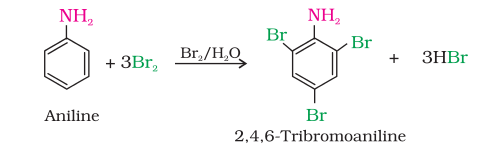
The main problem encountered during electrophilic substitution reactions of aromatic amines is that of their very high reactivity. Substitution tends to occur at ortho- and para-positions. If we have to prepare monosubstituted aniline derivative, how can the activating effect of –NH2 group be controlled ? This can be done by protecting the -NH2 group by acetylation with acetic anhydride, then carrying out the desired substitution followed by hydrolysis of the substituted amide to the substituted amine.
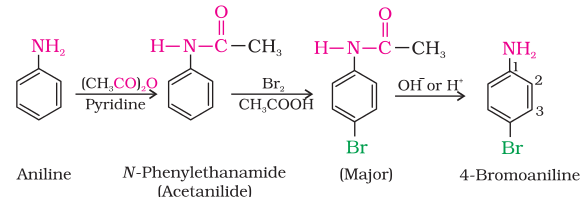
The lone pair of electrons on nitrogen of acetanilide interacts with oxygen atom due to resonance as shown below:
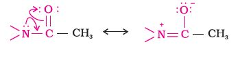
Hence, the lone pair of electrons on nitrogen is less available for donation to benzene ring by resonance. Therefore, activating effect of –NHCOCH3 group is less than that of amino group.
(b) Nitration: Direct nitration of aniline yields tarry oxidation products in addition to the nitro derivatives. Moreover, in the strongly acidic medium, aniline is protonated to form the anilinium ion which is meta directing. That is why besides the ortho and para derivatives, significant amount of meta derivative is also formed.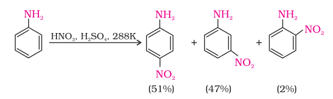
However, by protecting the –NH2 group by acetylation reaction with acetic anhydride, the nitration reaction can be controlled and the p-nitro derivative can be obtained as the major product.
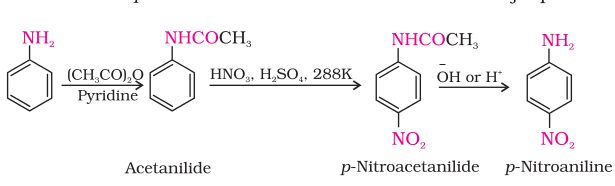
(c) Sulphonation: Aniline reacts with concentrated sulphuric acid to form anilinium hydrogensulphate which on heating with sulphuric acid at 453-473K produces p-aminobenzene sulphonic acid, commonly known as sulphanilic acid, as the major product.
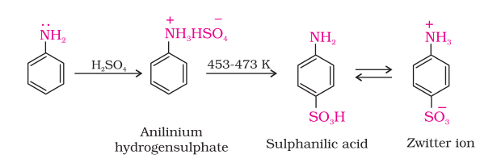
Aniline does not undergo Friedel-Crafts reaction (alkylation and acetylation) due to salt formation with aluminium chloride, the Lewis acid, which is used as a catalyst. Due to this, nitrogen of aniline acquires positive charge and hence acts as a strong deactivating group for further reaction.
II. DIAZONIUM SALTS
The diazonium salts have the general formula – R N2 X + where R stands for an aryl group and –X ion may be Cl– Br,– 4 HSO− , 4 BF− , etc. They are named by suffixing diazonium to the name of the parent hydrocarbon from which they are formed, followed by the name of anion such as chloride, hydrogensulphate, etc. The 2 N + group is called diazonium group. For example, – 6 5 2 C H N Cl + is named as benzenediazonium chloride and C6H5N2 +HSO4 – is known as benzenediazonium hydrogensulphate. Primary aliphatic amines form highly unstable alkyldiazonium salts (refer to Section 13.6). Primary aromatic amines form arenediazonium salts which are stable for a short time in solution at low temperatures (273-278 K). The stability of arenediazonium ion is explained on the basis of resonance.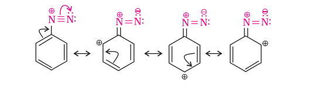